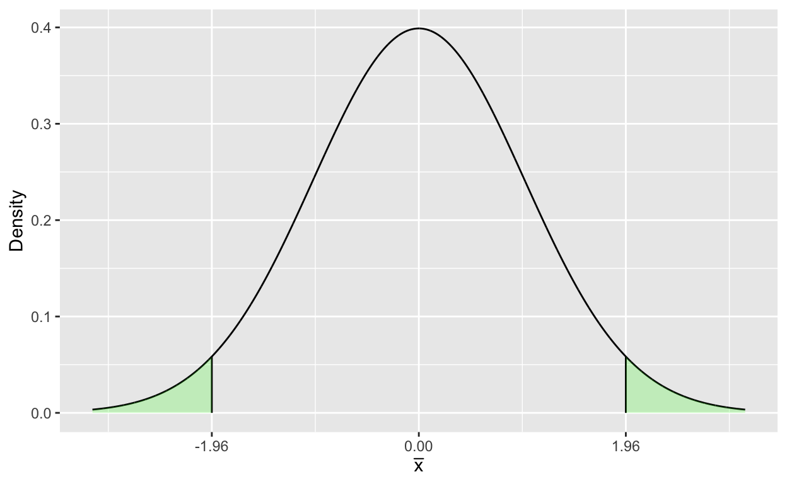

Statistical Hypothesis Testing for Large Samples
Introduction
Hypothesis testing refers to the practice of the statistical testing scientific hypotheses. Using data and taking into account the uncertainty in the data, we can evaluate scientific hypotheses based on the strength of the evidence in support of hypotheses and guides decisions based on the strength of the evidence. Under the Neyman-Pearson paradigm, this strength of evidence is a measure based on the sampling distribution of statistics, relying on both a set of scientifically valid hypotheses and a statistical model for evaluating the data.
Hypothesis testing refers to the practice of testing scientific hypotheses using data and taking into account the uncertainty in the data. Hypothesis testing relies on both a set of scientifically valid hypotheses and a statistical model for evaluating the data and assessing the hypotheses.
The modern basis for scientific reasoning can be attributed to the work of philosopher Karl Popper. Popper created the criteria for defining a hypothesis as ``scientific’’ if it could be shown to be falsifiable, or able to be proven incorrect.
Falsifiablity
Consider the assertion that ghosts or spirits are real. Is this a falsifiable hypothesis?
Any attempt to disprove this hypothesis can be countered with the argument that the lack of evidence of existence is not evidence of non-existence. Hence this is not a valid hypothesis.
Conversely, people used to believe that all swans were white. To disprove this hypothesis would only require one example of a non-white swan. In 1697 the Dutch explorer Willem de Vlamingh sailed up what is now known as the Swan River in Western Australia and saw black swans. The term ``black swan’’ is now used to refer to unexpected, rare (and usually extreme) events.
The Neyman-Pearson Lemma
The Neyman-Pearson Lemma is a formal mathematical proof that guides how to construct a hypothesis test. The details of the lemma are beyond the scope of this unit, but the central idea of the Neyman-Pearson lemma is that a test is constructed based on the hypotheses \[ H_0: \mbox{The Null Hypothesis}\qquad H_A:\mbox{The alternative hypothesis} \] and a decision to reject or fail to reject the null hypothesis is made based on the sampling distribution of the statistic.
The null hypothesis is given as a falsifiable statement, typically that there is no effect or that a parameter is equal to some value. The alternative hypothesis is the complement to the null hypothesis, or that the null hypothesis is not true. Given these hypotheses, a test statistic is defined that takes on some values according to its sampling distribution. From this sampling distribution a rejection region is defined, such that if the null hypothesis is true, the probability that the test statistic falls in the rejection region is sufficiently small as to suggest that the preponderance of the evidence indicates that that the null hypothesis is false.
Hypothesis tests consist of a set of hypotheses, a test statistic \(T(\mathbf{x})\) and the resulting rejection region. A hypothesis test is either two-tailed (or point null hypotheses): \[ H_0:\theta=\theta_0\qquad H_A:\theta\neq \theta_0 \] or single-tailed \[ H_0:\theta\leq \theta_0\qquad H_A:\theta>\theta_0 \] or \[ H_0:\theta\geq \theta_0\qquad H_A:\theta<\theta_0 \] The rejection region is chosen so that \(Pr(T(\mathbf{x}\in\mbox{Rejection Region})=\alpha\) where \(\alpha\) is the Type I error rate or \(Pr(\mbox{Reject }\)H_0\(|\)H_0\(\mbox{ is True})\). The Type II error rate, \(\beta\), is the \(Pr(\mbox{Fail to Reject }\)H_0\(|\)H_0\(\mbox{ is False})\). The compliment to the Type II error rate \(1-\beta\) is the \(Pr(\mbox{Reject }\)H_0\(|\)H_0\(\mbox{ is False})\) and is called the power of a test. We will see that power is an important design consideration when planning a study. We can understand \(\alpha\), \(\beta\) and power as the probabilities of various outcomes:
| \(H_0\) is True | \(H_0\) is False | |
|---|---|---|
| Reject \(H_0\) | \(\alpha\) (Type I Error Rate) | 1-\(\beta\) (Power) |
| Fail to Reject \(H_0\) | 1-\(\alpha\) | \(\beta\) (Type II Error Rate) |
The interpretation of all this is that in hypothesis testing we reject the null hypothesis, if the test statistic, which is a function of the data is too improbable, given the assumption that the null hypothesis is true. Note that as in the case of confidence intervals, hypothesis testing is based on probability statements about the test statistic or data, not the parameter.
In the plot below, the shaded region defines the two-tailed rejection region for \(\alpha = 0.05\), and the area bounded by the shaded regions is the \(95\%\) confidence interval based.

Hypothesis Testing for the Population Mean
The hypothesis test for the population mean is based on the sample statistic \(\bar{x}\) with the sampling distribution \[ \bar{x}\sim N\left(\mu,\frac{\sigma^2}{n}\right). \] For simplicity we define the rejection region in terms of the test statistic \[\begin{eqnarray*} Z&=&\frac{\bar{x}-\mu_0}{\sigma/\sqrt{n}}\\ Z&\sim& N(0,1) \end{eqnarray*}\] where we can define the rejection region(s) depending on the null hypothesis
Null Hypothesis Critical Values & Rejection Region Limits
| \(H_0: \mu=\mu_0\) | \(|Z|>Z_{\alpha/2}\) |
|---|---|
| \(H_0: \mu \leq\mu_0\) | \(Z>Z_\alpha\) |
| \(H_0: \mu\geq\mu_0\) | \(Z<-Z_\alpha\) |
Values for commonly used Type I Error Rate
| Type I Error Rate | \(Z_{\alpha}\) (one-sided) | \(Z_{\alpha/2}\) (two-sided) |
|---|---|---|
| 0.10 | 1.28 | 1.645 |
| 0.05 | 1.645 | 1.96 |
| 0.02 | 2.054 | 2.33 |
| 0.01 | 2.33 | 2.58 |
Example: Ore Processing
An ore processing facility has a record of producing an average of \(880\) tons of refined ore per day. Process engineers would like to see if this has changed over time. The records from \(n=50\) days randomly selected over the last year indicate that the sample average is \(\bar{x}=871\) tons with a standard deviation of \(21\) tons. Is there evidence to assume that the output has changed?
mu_0 <- 880
n <- 50
xbar <- 871
s <- 21
## Assume alpha = 0.05, then for a two-sided test
## Compute test statistic Z
## Find critical value
Z_critical<-qnorm(0.975)
Assume that \[ H_0: \mu = 880\qquad\mbox{and}\qquad\mu\neq 880 \] and a Type I Error Rate of \(\alpha=0.05\). The test statistic is \[ \begin{aligned} Z &=& \frac{\sqrt{n}(\bar{x}-\mu_0)}{s}\\ &=&\frac{\sqrt{50}(871-880)}{21}\\ &=&-3.03 \end{aligned} \] Reject \(H_0\) if \(|Z|>Z_{\alpha/2}\). Since \(Z_{\alpha/2}=1.96\) then \[ |-3.03|>1.96 \] so we reject \(H_0\).
Example: Equal Pay
Gender imbalance in pay is a concern for ensuring equitable treatment of individuals. Data for employees at a large company show that for employees in a certain role, the average weekly salary for women is $670. A sample of \(n=40\) male employees show that they earn an average weekly salary of $725 with a standard deviation of $102. What is our hypothesis test for determining if men and women receive equal pay? Or are women paid less than men?
mu_0 <- 670
n <- 40
xbar <- 725
s <- 102
## Assume alpha = 0.05, then for a two-sided test
## Compute test statistic Z
## Find critical value
Z_critical<-qnorm(0.95)
We assume a single-sided hypothesis, or that if we reject the null hypothesis it is implict that men are paid more. So we assume that \[ H_0: \mu \leq 670\qquad\mbox{and}\qquad\mu > 670 \] where \(\mu\) is the average pay for male employees. Assume a Type I Error Rate of \(\alpha=0.05\). The test statistic is \[ \begin{aligned} Z &=& \frac{\sqrt{n}(\bar{x}-\mu_0)}{s}\\ &=&\frac{\sqrt{40}(725-670)}{102}\\ &=& 3.41 \end{aligned} \] Reject \(H_0\) if \(Z>Z_{\alpha}\). Since \(Z_{\alpha}=1.645\) then \[ 3.41>1.645 \] so we reject \(H_0\).
Hypothesis Testing for the Population Proportions
The sample statistic for the population proportion is \(\hat{p}\) which follows a sampling distribution of \[
\hat{p}\sim\left(p,\frac{p(1-p)}{n}\right)
\] when \(np>5\) and \(n(1-p)>5\).
The resulting test is of the form \[
H_0:p = p_0\qquad H_A:p\neq p_0
\] or \[
H_0:p \geq p_0\qquad H_A:p< p_0
\] or \[
H_0:p \leq p_0\qquad H_A:p> p_0
\] with the rejection region defined by the test statistic for \(\hat{p}\) \[
Z = \frac{\sqrt{n}(\hat{p}-p_0)}{\sqrt{p_0(1-p_0)}}
\] Note that the rejection rules for the hypotheses are similar to those for the population mean.
Example: Exercise Participation and Age
On average, 30% of adults in Australia exercise weekly. A survey of \(n=100\) adults over 40 years of age revealed that 15 of the respondents indicated that they exercised weekly. Does this indicate that the proportion of adults who exercise weekly decreases with age?
p0 <- 0.30
n <- 100
x <- 15
## Assume alpha = 0.05
## Compute test statistic Z
## Find critical value
The question is about a proportion decreasing, so we want to construct the null hypothesis so that rejection implies that there is a decrease. Hence \[ H_0:p\geq p_0\qquad\mbox{and}\qquad H_A: p<p_0 \] are the hypotheses. \(\hat{p}=x/n=0.15\) so the test statistic is \[ \begin{aligned} Z &= \frac{\hat{p}-p_0}{\sqrt{\frac{p_0(1-p_0)}{n}}}\\ &=\frac{0.15-0.30}{\sqrt{\frac{(0.3)(0.7)}{100}}}\\ &=-3.27 \end{aligned} \] Reject \(H_0\) if \(Z<-Z_{\alpha}\), since \(Z_{\alpha}=1.645\) and \(-3.27<-1.645\) we reject the null hypothesis.
Example: Driverless Cars
A research study showed that out of 500 individuals surveys, 276 reported that they would not be willing to ride in a driverless vehicle. Test the hypothesis that over \(50\%\) of the population would be unwilling to ride in a driverless vehicle. Assume a Type I error rate of \(\alpha = 0.1\).
n<-500
x<-276
p0<-0.5
## Alpha = 0.01
## Compute test statistic Z
## Find critical value
The assumption is that \(p<0.5\), and the question states that we want to test this hypothesis, so we want to set this up as the null hypothesis: \[ H_0:p\leq 0.5\qquad\mbox{and}\qquad p>0.5. \] Compute \(\hat{p}=x/n=0.552\) and find the test statistic \[ \begin{aligned} Z &= \frac{\hat{p}-p_0}{\sqrt{\frac{p_0(1-p_0)}{n}}}\\ &=\frac{0.552-0.5}{\sqrt{\frac{(0.5)(0.5)}{500}}}\\ &=2.325 \end{aligned} \] Reject \(H_0\) if \(Z>Z_{\alpha}\), since \(Z_{\alpha}=1.28\) and \(2.325>1.28\) we reject the null hypothesis.
Test for Hypotheses About the Difference in Population Means
Often times the more interesting question is is there a difference between two groups, for this we need a means of testing hypotheses about the difference of two population means. In this case we would formulate the hypotheses and rejection regions as
| Null Hypothesis | Rejection Region |
|---|---|
| \(H_0: \mu_1 = \mu_2\) | \(|Z|>Z_{\alpha/2}\) |
| \(H_0: \mu_1\leq\mu_2\) | \(Z>Z_\alpha\) |
| \(H_0: \mu_1\geq\mu_2\) | \(Z<-Z_\alpha\) |
Note that these hypotheses are equivalent to
| Null Hypothesis | Rejection Region |
|---|---|
| \(H_0: \mu_1 -\mu_2 = 0\) | \(|Z|>Z_{\alpha/2}\) |
| \(H_0: \mu_1-\mu_2\leq 0\) | \(Z>Z_\alpha\) |
| \(H_0: \mu_1-\mu_2\geq 0\) | \(Z<-Z_\alpha\) |
and that because the labels for \(\mu_1\) and \(\mu_2\) are arbitrary the last two hypotheses with the inequalities are equivalent.
Test Statistic
The test statistic \(Z\) is previously defined for a single sample mean or proportion as \[ Z_{\theta}=\frac{\hat{\theta}-\theta_0}{SE_{\hat{\theta}}} \] where \(\hat{\theta}\) is the sample estimate of the parameter \(\theta\), \(\theta_0\) is the hypothesised value of \(\theta\), and \(SE_{\hat{\theta}}\) is the standard error of \(\hat{\theta}\). In the case of hypotheses about the difference between two population means we need an estimate and its standard error. The estimator of \(\mu_1-\mu_2\) is easy to intuit as \[ \bar{x}_1-\bar{x}_2. \] The standard error is slightly less intuitive \[ SE_{\bar{x}_1-\bar{x}_2}=\sqrt{\frac{s_1^2}{n_1}+\frac{s_2^2}{n_2}}. \] The resulting test statistic is \[ Z = \frac{(\bar{x}_1-\bar{x}_2)-\Delta_0}{\sqrt{\frac{s_1^2}{n_1}+\frac{s_2^2}{n_2}}} \] where \(\Delta_0=\mu_1-\mu_2\).
Example: Braking Distance
Two different braking systems for cars are being evaluated. The distance in metres required to come to a complete stop from a speed of 80 km/h was measured for the two systems in an experiment consisting of 64 trials for each system. The following information was recorded
| System 1 | System 2 |
|---|---|
| \(\bar{x} = 36.75\) | \(\bar{x} = 33.53\) |
| \(s_1^2 = 9.48\) | \(s_2^2 = 8.09\) |
Is there sufficient evidence to reject the null hypothesis that these two systems are equally effective? Test assuming an \(\alpha = 0.05\) Type I error rate.
xbar1 <- 36.75
xbar2 <- 33.53
var1 <- 9.48
var2 <- 8.09
n1<-64
n2<-64
## Alpha = 0.05
## Compute test statistic Z
## Find critical value
The keyword “equally effective” implies that the null hypothesis is that the two systems are equal \[ H_0:\mu_1-\mu_2 = 0\qquad\mbox{and}\qquad H_A:\mu_1-\mu_2\neq 0 \] the test statistic is then \[ \begin{aligned} Z &= \frac{\bar{x}_1-\bar{x}_2}{\sqrt{\frac{s_1^2}{n_1}+\frac{s_2^2}{n_2}}}\\ & = \frac{36.75-33.53}{\sqrt{\frac{9.48}{64}+\frac{8.09}{64}}}\\ & = 6.08 \end{aligned} \] Reject \(H_0\) if \(|Z|>Z_{alpha/2}\), as \(Z_{\alpha/2}=1.96\) and \(|6.08|>1.96\) we reject \(H_0\).
Example: Electric Car Ranges
While there is a significant difference between the purchase price of a Tesla Y and a Nissan Leaf, is there a significant difference in the operating ranges? Real-world testing yielded these results:
| Car | Mean (km) | Std. Dev. (km) | Sample Size |
|---|---|---|---|
| Tesla Y | 370 | 63 | 40 |
| Nissan Leaf | 315 | 47 | 40 |
Is there sufficient evidence to reject the null hypothesis that the range of the Tesla Model Y is less than or equal to the range of the Nissan Leaf?
xbar1 <- 370 ## Range of Tesla
xbar2 <- 315 ## Range of Nissan
s1 <- 63
s2 <- 47
n1 <- 40
n2 <- 40
## Alpha = 0.05
## Compute test statistic Z
## Find critical value
We are given the null hypothesis explicitly, so \[ H_0:\mu_1-\mu_2\leq 0\qquad\mbox{and}\qquad H_A:\mu_1-\mu_2>0 \] the test statistic is then \[ \begin{aligned} Z &= \frac{\bar{x}_1-\bar{x}_2}{\sqrt{\frac{s_1^2}{n_1}+\frac{s_2^2}{n_2}}}\\ & = \frac{370-315}{\sqrt{\frac{63^2}{40}+\frac{47^2}{40}}}\\ & = 4.43 \end{aligned} \] Assuming a Type I Error Rate of \(\alpha=0.05\), reject \(H_0\) if \(Z>Z_{alpha}\), as \(Z_{\alpha}=1.645\) and \(4.43>1.645\) so we reject \(H_0\), which implies that the average range of a Tesla Model Y is greater than the average range of a Nissan Leaf.
Hypotheses About the Difference Between Population Proportions
As is the case with comparing two population means, questions about the difference between two population proportions often arise. In these cases we define the hypotheses and rejection regions as:
| Null Hypothesis | Rejection Region |
|---|---|
| \(H_0: p_1 = p_2\) | \(|Z|>Z_{\alpha/2}\) |
| \(H_0: p_1\leq p_2\) | \(Z>Z_\alpha\) |
| \(H_0: p_1\geq p_2\) | \(Z<-Z_\alpha\) |
Note that these hypotheses are equivalent to
| Null Hypothesis | Rejection Region |
|---|---|
| $H_0: p_1 - p_2 = 0 $ | \(|Z|>Z_{\alpha/2}\) |
| \(H_0: p_1-p_2\leq 0\) | \(Z>Z_\alpha\) |
| \(H_0: p_1-p_2\geq 0\) | \(Z<-Z_\alpha\) |
Test Statistic
The test statistic of comparing two population proportions differs slightly from that used to compare two populations means. The null hypotheses assume that \(p_1=p_2\) (regardless of the inequality), thus while the point estimator for the difference in proportions in \[ \hat{p}_1-\hat{p}_2 \] the standard error is \[ SE_{\hat{p}_1-\hat{p}_2}=\sqrt{p_0(1-p_0)\left(\frac{1}{n_1}+\frac{1}{n_2}\right)} \] where \[ p_0 = \frac{x_1+x_2}{n_1+n_2} \] which follows as the best estimate of \(p=p_1=p_2\). The resulting test statistic is then \[ Z=\frac{\hat{p}_1-\hat{p}_2}{\sqrt{p_0(1-p_0)\left(\frac{1}{n_1}+\frac{1}{n_2}\right)}}. \] Note that in the event that the hypothesised difference is not \(0\), i.e. \(p_1-p_2=\Delta_0\) where \(\Delta\neq 0\), the test statistic is \[ Z=\frac{(\hat{p}_1-\hat{p}_2)-\Delta_0}{\sqrt{\frac{\hat{p}_1(1-\hat{p}_1)}{n_1}+\frac{\hat{p}_2(1-\hat{p}_2)}{n_2}}}. \] This statistic is rarely used, but the evaluation and interpretation of the test results are the same.
Example: Tai Chi and Fibromyalgia
There is some evidence to suggest that tai chi can alleviate chronic pain from fibromyalgia. Sixty-six individuals participated in a 12-week trial where they were divided into two equally sized groups. Group 1 participated in a tai chi class for the study period, while Group 2 participated in a wellness education class for the study period. At the end of the study, each participant was asked if they felt that their pain had reduced; a summary of the results is:
| Tai Chi | Wellness Education | |
|---|---|---|
| Reduced Pain | \(x_1 = 26\) | \(x_2=13\) |
Perform a test of the hypothesis that tai chi is more effective than the wellness class in alleviating chronic pain from fibromyalgia. Assume a Type I error rate of \(\alpha=0.01\).
x1 <- 26
x2 <- 13
n1 <- 33
n2 <- 33
## Alpha = 0.01
## Compute test statistic Z
## Find critical value
We are testing the hypothesis that tai chi is more effective than wellness class at alleviating chronic pain from fibromyalgia, so we are going to specify the null hypothesis as equal to or less \[ H_0:p_1-p_2\leq0\qquad\mbox{and}\qquad H_A: p_1-p_2>0 \] compute \(\hat{p}_1 = x_1/n_1 = 0.79\), \(\hat{p}_2 = x_2/n_2 = 0.39\), and \(p_0 = (x_1+x_2)/(n_1+n_2)\), then the test statistic \[ \begin{aligned} Z & = \frac{\hat{p}_1-\hat{p}_2}{\sqrt{p_0(1-p_0)\left(\frac{1}{n_1}+\frac{1}{n_2}\right)}}\\ &=\frac{0.79-0.39}{\sqrt{(0.59)(0.41)\left(\frac{1}{33}+\frac{1}{33}\right)}}\\ & = 3.25. \end{aligned} \] Reject \(H_0\) if \(Z>Z_{\alpha}\), and size \(Z_{\alpha}=2.33\), \(3.25>2.33\) so we reject \(H_0\).
Example: The Effects of Hormone Replacement Therapy and Dementia
A four-year study of 4532 women conducted at 39 different medical centres divided the women at random into two equally sized groups. One group received hormone replacement therapy (HRT), and the other received a placebo. At the end of the study, there were 40 cases of dementia in the HRT group and 21 in the placebo group. Is there sufficient evidence to reject the hypothesis that the risk for dementia is lower in the HRT group? Assume a Type I error rate of \(\alpha = 0.01\).
## n = 4532 but these are split into two equal sized groups so
n1<-2266
n2<-2266
x1<-40
x2<-21
## Alpha = 0.01
## Compute test statistic Z
## Find critical value
Given the problem statement we construct the hypotheses as \[ H_0:p_1-p_2\leq 0\qquad\mbox{and}\qquad H_A:p_1-p_2 > 0 \] \(\hat{p}_1 = x_1/n_1 = 0.018\), \(\hat{p}_2 = x_2/n_2 = 0.010\), and \(p_0 = (x_1+x_2)/(n_1+n_2) = 0.013\) the test statistic is \[ \begin{aligned} Z & = \frac{\hat{p}_1-\hat{p}_2}{\sqrt{p_0(1-p_0)\left(\frac{1}{n_1}+\frac{1}{n_2}\right)}}\\ &=\frac{0.018-0.010}{\sqrt{(0.013)(0.987)\left(\frac{1}{2266}+\frac{1}{2266}\right)}}\\ & = 2.49 \end{aligned} \]
Reject \(H_0\) if \(Z>Z_{\alpha}\), and size \(Z_{\alpha}=2.33\), \(2.49>2.33\) so we reject \(H_0\).
Additional Considerations
Beyond the mechanics of performing hypothesis testing, there are additional considerations that should be borne in mind. Hypothesis testing is one of the first of techniques that make up the statistical ``toolbox’’, and coincidentally is one of the first where we see that there is some measure of subjective interpretation needed to use and understand the results of a hypothesis test fully.
Power and Type II Error Rate
Recall that we noted that the Type II error rate \(\beta\) is the probability that we fail to reject the null hypothesis given that it is false. Power is \(1-\beta\), or the probability that we reject the null hypothesis given that it is false. Computing the Type II error rate depends on the difference between the null hypothesis and the true state of reality, and the Type I error rate.
In terms of the test and rejection region, assume that we want to calculate the Type II error rate for a true value of \(\theta=\theta^*\), and a Type I error rate of \(\alpha\). If \[ \beta = Pr(|Z|\leq Z_{\alpha/2}|\theta=\theta^*) \] where the test statistic \(Z\) is computed under the assumptions of the null hypothesis \[ Z = \frac{\hat{\theta}-\theta_0}{SE_{\hat{\theta}}}. \] Thus power can be defined as \[ \begin{aligned} \mbox{Power}& = &1-Pr(|Z|\leq Z_{\alpha/2}|\theta=\theta^*)\\ &=&Pr(|Z|\geq Z_{\alpha/2}|\theta=\theta^*) \end{aligned} \]
Example: Computing Type II Error Rate and Power
Recall the previous example of ore refining. Suppose that the true value of \(\mu=870\). Assuming a Type I error rate of \(\alpha = 0.05\), find the Type II error rate and power for the statistical test.
mu_star <- 870 ## The "true" value of mu
mu_0 <- 880
n <- 50
xbar <- 871
s <- 21
## Compute the acceptance region, based on mu_0
ULA <- mu_0+1.96*s/sqrt(n)
LLA <- mu_0-1.96*s/sqrt(n)
## Compute the Z for the acceptance region, given mu_star
z1 <- sqrt(n)*(ULA-mu_star)/s
z2 <- sqrt(n)*(LLA-mu_star)/s
## Type II Error Pr(z2<Z<z1)
beta <- pnorm(z1)-pnorm(z2)
power <- 1 - beta
To begin, we compute the acceptance region, or the compliment of the rejection region, i.e. we reject the null hypothesis if \[ \bar{x}>z_1=\mu_0+Z_{\alpha/2}\frac{s}{\sqrt{n}}\mbox{ or }\bar{x}<z_2=\mu_0-Z_{\alpha/2}\frac{s}{\sqrt{n}} \] making the acceptance region \[ \mu_0-Z_{\alpha/2}\frac{s}{\sqrt{n}}<\bar{x}<\mu_0+Z_{\alpha/2}\frac{s}{\sqrt{n}} \] The Type II error rate is the probability of observing a sample value of \(\bar{x}\) in the acceptance region given that \(\mu=\mu^*\) or \[ Pr\left(\frac{\sqrt{n}(z_2-\mu^*)}{s}<z<\frac{\sqrt{n}(z_1-\mu^*)}{s}\right) \] Which yields the numerical results \[ \beta = Pr(1.41<z<5.33)=Pr(z<5.33)-Pr(z<1.41) = 0.080 \] and the power is \[ 1-\beta = 0.92 \]
Hypothesis Testing as the Inverse of a Confidence Interval
There is a fundamental connection between confidence intervals and hypothesis tests. Both are based on probabilistic statements based on the sampling distribution for a statistic. The hypothesis test can be viewed as the complement of a confidence interval, as the rejection region defined by the hypothesis test is the compliment of the confidence interval for a two sided-test, as measured using \(\mu_0\) in lieu of \(\bar{x}\) (see the example above). The decision to reject the null hypothesis because it falls outside the confidence interval is equivalent to computing the test statistic and rejecting the null hypothesis if the value \(\theta_0\) falls within the rejection region.
Example: Protein Intake
In Example 7.3.2, a sample of \(n=50\) adult men reveals that their average daily intake of protein is \(\bar{x}=75.6\) grams per day with a standard deviation of \(s=3.5\) grams. Construct a (\(1-\alpha = 95\%\)) confidence interval for the average daily intake of protein for men and use it to test the hypotheses: \[ H_0: \mu = 74\qquad H_A:\mu\neq 74 \] (note that the (\(1-\alpha\)) confidence level corresponds to a Type I error rate of \(\alpha\).
Accept or Fail to Reject?
There is some debate about whether or not to fail to reject the null hypothesis constitutes tacit acceptance of the null hypothesis or if it implies that evidence concerning the null hypothesis is inconclusive. Some textbooks state that failure to reject is acceptance of the null hypothesis. The argument I present here is that if the parameter \(\theta\) can take on infinite possible values, then accepting a hypothesis that \(\theta\) equals a hypothesised value is equivalent to assuming that there is a non-zero probability that a continuous random variable will take on a given value. This is hardly a rigorous argument, but it represents a conservative approach to interpreting hypothesis tests.
Statistical Significance and Practical Importance
Statistical significance is not always an indicator of practical importance. Powerful tests can reject null hypotheses when the parameter estimator is not that different from the hypothesised value. It is important to consider what is meaningful in terms of the actual application being analysed to determine what a significant difference is. This can be an important consideration when designing tests and choosing sample sizes.
Worksheet Practical Question 1
Load the dataepisodes and test the hypothesis that the average IMDB ranking of an epsiode of Star Trek (The Original Series) greater than \(7.7\). Assume the Type I Error Rate of \(\alpha = 0.05\).
data("episodes")
xbar<-episodes%>%
filter(Series == "TOS")%>%
summarise(mean(IMDB.Ranking))
n<-episodes%>%
filter(Series == "TOS")%>%
summarise(n())
data("episodes")
xbar<-episodes%>%
filter(Series == "TOS")%>%
summarise(mean(IMDB.Ranking))
n<-episodes%>%
filter(Series == "TOS")%>%
summarise(n())
s <- episodes%>%
filter(Series == "TOS")%>%
summarise(sd(IMDB.Ranking))
SE <- s/sqrt(n)
Z <- (xbar-7.7)/SE
## Null hypothesis is that mu<=7.7 so reject if Z>Z.crit
Z.crit <- qnorm(0.95)
Z>Z.crit
#> mean(IMDB.Ranking)
#> [1,] FALSEWorksheet Practical Question 2
Load the data episodes and test the hypothesis that the difference of the mean IMDB.Ranking for Star Trek (The Original Series) and Star Trek: The Next Generation are \(0\). Assume a Type I Error Rate of \(\alpha = 0.05\).
data(episodes)
xbar<-episodes%>%
filter(Series == "TOS")%>%
summarise(mean(IMDB.Ranking))
n<-episodes%>%
filter(Series == "TOS")%>%
summarise(n())
data(episodes)
xbar.tos<-episodes%>%
filter(Series == "TOS")%>%
summarise(mean(IMDB.Ranking))
n.tos<-episodes%>%
filter(Series == "TOS")%>%
summarise(n())
var.tos<-episodes%>%
filter(Series == "TOS")%>%
summarise(var(IMDB.Ranking))
xbar.tng<-episodes%>%
filter(Series == "TNG")%>%
summarise(mean(IMDB.Ranking))
n.tng<-episodes%>%
filter(Series == "TNG")%>%
summarise(n())
var.tng<-episodes%>%
filter(Series == "TNG")%>%
summarise(var(IMDB.Ranking))
SE<-(var.tos/n.tos+var.tng/n.tng)%>%sqrt()
Z<-(xbar.tos-xbar.tng)/SE
Z.crit <-pnorm(0.975)
abs(Z)>Z.crit
#> mean(IMDB.Ranking)
#> [1,] FALSEWorksheet Practical Question 3
Load the data set episodes.csv and find the proportion of Star Trek: The Next Generation epsiodes that pass the Bechdel-Wallace test.
data(episodes)
p.tng<-episodes%>%
filter(Series == "TNG")%>%
summarise(mean(Bechdel.Wallace.Test))
n.tng<-episodes%>%
filter(Series == "TNG")%>%summarise(n())
data(episodes)
p.tng<-episodes%>%
filter(Series == "TNG")%>%
summarise(mean(Bechdel.Wallace.Test))
n.tng<-episodes%>%
filter(Series == "TNG")%>%summarise(n())
SE<-(p.tng*(1-p.tng)/n.tng)%>%sqrt()
Z <- (p.tng-0.4)/SE
Z.crit <- qnorm(0.975)
abs(Z)>Z.crit
#> mean(Bechdel.Wallace.Test)
#> [1,] FALSEWorksheet Practical Question 4
Load the data set episodes.csv and find the overall proportion of episodes that pass the Bechdel-Wallace test, and the proportion of Star Trek: The Next Generation epsiodes that pass the Bechdel-Wallace test.
Test the hypothesis that the difference in proportions between Star Trek: The Next Generation and Star Trek: Voyager is \(0\). Assume a Type I Error Rate of \(\alpha = 0.05\).
data(episodes)
p.tng<-episodes%>%
filter(Series == "TNG")%>%
summarise(mean(Bechdel.Wallace.Test))
n.tng<-episodes%>%
filter(Series == "TNG")%>%
summarise(n())
data(episodes)
x.tng<-episodes%>%
filter(Series == "TNG")%>%
summarise(sum(Bechdel.Wallace.Test))
n.tng<-episodes%>%
filter(Series == "TNG")%>%summarise(n())
p.tmg<-x.tng/n.tng
x.voy<-episodes%>%
filter(Series=="VOY")%>%
summarise(sum(Bechdel.Wallace.Test))
n.voy<-episodes%>%
filter(Series=="VOY")%>%summarise(n())
p.voy <- x.voy/n.voy
p0<-(x.tng+x.voy)/(n.tng+n.voy)
SE<-p0*(1-p0)*(1/n.tng+1/n.voy)%>%sqrt()
Z<-(p.tng-p.voy)/SE
Z.crit <- qnorm(0.975)
abs(Z)>Z.crit
#> mean(Bechdel.Wallace.Test)
#> [1,] TRUEAdditional Questions for Practice
Load the epa_data and answer the following:
- Test the hypothesis that there is no difference between the city mileage for cars manufactured in 1990 and 2000. Assume a Type I Error Rate of \(\alpha = 0.05\)
data(epa_data)
x_1990 <- epa_data%>%filter(year == 1990)%>%summarise(mean(city))
s_1990 <- epa_data%>%filter(year == 1990)%>%summarise(sd(city))
n_1990 <- epa_data%>%filter(year == 1990)%>%summarise(n())
x_2000 <- epa_data%>%filter(year == 2000)%>%summarise(mean(city))
s_2000 <- epa_data%>%filter(year == 2000)%>%summarise(sd(city))
n_2000 <- epa_data%>%filter(year == 2000)%>%summarise(n())
SE <- ((s_1990)^2/n_1990+(s_2000)^2/n_2000)%>%sqrt()
Z<-(x_1990 - x_2000) / SE
Z.crit <- qnorm(0.975)
ifelse(abs(Z)>Z.crit,paste("Z = ", Z, " Reject Null Hypothesis"),
paste("Z = ",Z, " Fail to Reject Null Hypothesis"))- Test the hypothesis that the proportion of cars produced with manual transmissions in 1990 is less than \(0.5\). Assume a Type I Error Rate of \(\alpha = 0.05\)
data(epa_data)
p0 <- 0.5
x<-epa_data%>%filter(year == 1990,trans == "Manual")%>%summarise(n())
n<-epa_data%>%filter(year == 1990)%>%summarise(n())
phat<-x/n
SE<-(p0*(1-p0)/n)%>%sqrt()
Z<-(phat - p0)/SE
## Because we are testing if the proportion is less than 0.5, then we set the null
## hypothesis to assume the opposite is true. So we would reject for small Z<-Z.crit
Z.crit <- qnorm(0.95)
ifelse(Z < -Z.crit,paste("Z = ", Z, " Reject Null Hypothesis"),
paste("Z = ",Z, " Fail to Reject Null Hypothesis"))
- Test the hypothesis that the proportion of cars produced with manual transmissions for the years 1990 and 2010 has decreased. Assume a Type I Error Rate of \(\alpha = 0.01\)
data(epa_data)
x.1990 <- epa_data%>%filter(year == 1990,trans == "Manual")%>%summarise(n())
n.1990 <- epa_data%>%filter(year == 1990)%>%summarise(n())
phat.1990 <- x.1990/n.1990
x.2010 <- epa_data%>%filter(year == 2010,trans == "Manual")%>%summarise(n())
n.2010 <- epa_data%>%filter(year == 2010)%>%summarise(n())
phat.2010 <- x.2010/n.2010
SE <- (phat.1990*(1-phat.1990)/n.1990+phat.2010*(1-phat.2010)/n.2010)%>%sqrt()
Z <- (phat.2010-phat.1990)/SE
## Because we are testing if the difference proportions is less than 0, then we
## set the null hypothesis to assume the opposite is true. So we would reject for
## small Z < -Z.crit
Z.crit <- qnorm(0.99)
ifelse(Z < -Z.crit,paste("Z = ", Z, " Reject Null Hypothesis"),
paste("Z = ",Z, " Fail to Reject Null Hypothesis"))